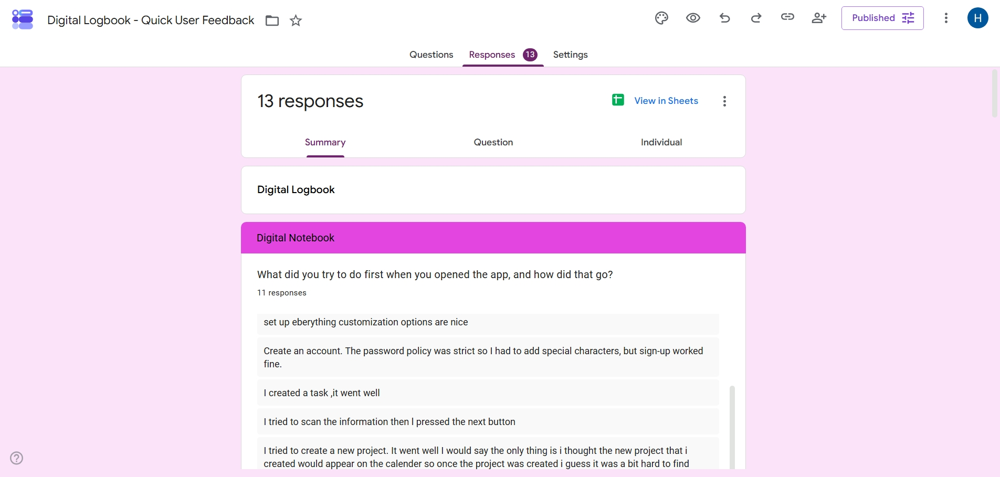
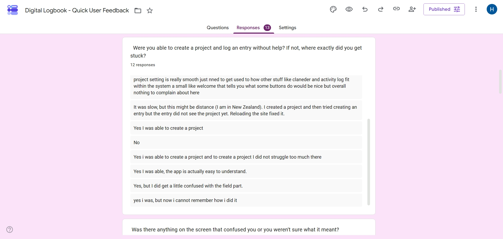
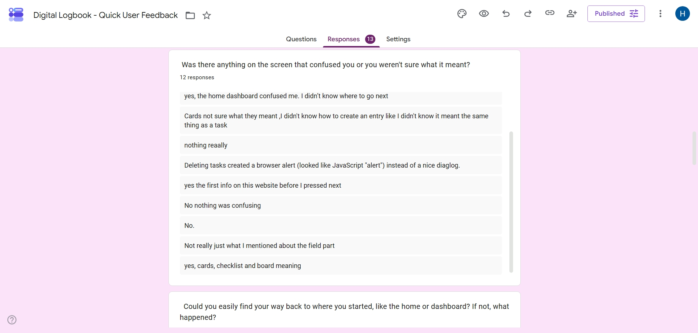

Testing & User Feedback¶
Test lead: Hlulani Baloyi — responsible for writing, reviewing, and maintaining the test suite across all frontend and backend services.
Quality Assurance Overview¶
This page documents three pillars of our quality assurance strategy:
- Automated Testing Procedure — how tests are structured, run, and enforced
- Testing Policy — the rules the team follows for test coverage
- User Feedback Process — how stakeholder input is collected, triaged, and actioned
Automated Testing Procedure¶
Testing Tools and Frameworks¶
| Layer | Tool | Purpose |
|---|---|---|
| Frontend test runner | Vitest | Unit and integration tests for frontend |
| Backend test runner | Jest | Unit and integration tests for backend services |
| Component rendering | @testing-library/react | Render React components, simulate user interactions |
| DOM assertions | @testing-library/jest-dom | Semantic assertions (toBeDisabled, toHaveTextContent) |
| IndexedDB polyfill | fake-indexeddb | Integration tests that exercise the real cache layer |
| Backend HTTP tests | Jest + supertest | Endpoint tests for each microservice |
| CI pipeline | Gitea Actions | Automated test runs on every push and PR |
What Types of Tests Are Run¶
Unit Tests¶
Unit tests verify individual functions and components in isolation. All external dependencies (Supabase, fetch, IndexedDB) are mocked.
Examples:
- Pure functions:
formatDuration,isOverdue,calculateStreaks,searchAll - API helpers:
request()with auth headers and error handling - Auth context: sign-in, sign-up, OAuth, password reset, account deletion
- Component logic: form submission, conditional rendering, event handlers
Integration Tests¶
Integration tests verify that multiple modules work together correctly. These use real IndexedDB (via fake-indexeddb) and test the full data flow.
Examples:
- Cache layer —
cacheSet→cacheGet→cacheSubscribeevent flow, isolation between users,clearUserCache - Entry CRUD — optimistic write → server sync → cache update, rollback on failure
- Sync service —
syncAllDatapopulates all IndexedDB stores from server responses - Auth + Cache — sign-out clears IndexedDB, SSE disconnect on logout
- useCachedData hook — reads from cache immediately, subscribes to changes, triggers background fetch
End-to-End (Manual)¶
End-to-end testing is done manually during development and sprint demos. Full browser E2E automation (e.g. Cypress) is planned but not yet implemented.
Test File Organisation¶
frontend/src/
├── components/__tests__/ # Shared component tests
│ ├── AppShell.test.tsx
│ ├── Header.test.tsx
│ ├── NavBar.test.tsx
│ ├── ProfileMenu.test.tsx
│ ├── ProtectedRoute.test.tsx
│ ├── QuickEntryBar.test.tsx
│ └── Stats.test.tsx
├── pages/__tests__/ # Page-level tests
│ ├── AllEntries.test.tsx
│ └── SignIn.test.tsx
├── Templates/__tests__/ # Template component tests
│ ├── EntriesByDueDateBoard.test.tsx
│ ├── EntryChecklist.test.tsx
│ └── ProjectTable.test.tsx
├── __integration__/ # Integration tests (separate from unit)
│ ├── auth-cache.integration.test.js
│ ├── cache.integration.test.js
│ ├── entries-crud.integration.test.js
│ ├── sync-service.integration.test.js
│ └── use-cached-data.integration.test.tsx
├── context/__tests__/ # Auth context tests
├── functions/__tests__/ # Pure function tests
├── functions/dashboard/__tests__/
├── hooks/__tests__/ # Hook tests
└── lib/__tests__/ # Library/utility tests
Naming convention: {SourceName}.test.{ext} — test files match the source file they cover. Integration tests use .integration.test.{ext} to distinguish them from unit tests.
Test Structure Pattern¶
Every test follows Arrange → Act → Assert:
import { describe, it, expect, vi } from 'vitest';
describe('functionName', () => {
it('does the expected thing', () => {
// Arrange — set up inputs and mocks
// Act — call the function
// Assert — verify the result
});
});
Component tests use render + screen queries:
it('renders the project name on each checklist card', () => {
render(<ChecklistEntryCard entry={sampleEntry} />);
expect(screen.getByText('TestProject')).toBeTruthy();
});
How Tests Are Executed¶
Locally¶
# From the frontend/ directory
npm test # Run all tests once
npm run test:watch # Watch mode (re-runs on file change)
npm run test:coverage # Generate coverage report (v8)
# Run only integration tests
npx vitest run src/__integration__/
# Run a specific test file
npx vitest run src/components/__tests__/NavBar.test.tsx
In CI (Gitea Actions)¶
Multiple CI pipelines run on every push and pull request to main:
| Workflow | What it runs |
|---|---|
.gitea/workflows/ci.yml |
Lint, build, and tests for frontend and all four services |
.gitea/workflows/frontend-unit-tests.yml |
Frontend unit tests (excludes src/__integration__/) |
.gitea/workflows/frontend-integration-tests.yml |
Frontend integration tests (src/__integration__/ only) |
.gitea/workflows/backend-unit-tests.yml |
Backend unit tests (excludes integration) for all four services |
.gitea/workflows/backend-integration-tests.yml |
Backend integration tests for all four services |
# Frontend unit tests
jobs:
frontend-unit-tests:
steps:
- run: npx vitest run --exclude "src/__integration__/**"
# Backend unit tests (matrix over all four services)
jobs:
backend-unit-tests:
strategy:
matrix:
service: [auth-service, dashboard-service, profile-service, project-service]
steps:
- run: npx jest --testPathIgnorePatterns="integration" --forceExit --detectOpenHandles
Each workflow appears separately in the Gitea Actions UI. If any test fails, the pipeline fails and the push is flagged.
Mocking Approach¶
| Dependency | Mock strategy | Reason |
|---|---|---|
| Supabase client | vi.mock('@/lib/supabase') |
Prevents real database/auth calls |
fetch / request() |
vi.fn() or vi.mock('@/lib/api') |
Isolates from network |
| React Router | <MemoryRouter> wrapper |
Controls navigation in tests |
| IndexedDB | fake-indexeddb/auto |
Real IndexedDB API in jsdom for integration tests |
localStorage |
localStorage.clear() in beforeEach |
Prevents test pollution |
| Child components | vi.mock('../Component') |
Tests one component in isolation |
| Auth context | vi.mock('@/context/AuthContext') |
Provides mock user for component tests |
IntersectionObserver |
No-op class stub in src/test/setup.ts |
jsdom does not implement it; landing-sections scroll-reveal needs it |
matchMedia |
No-op stub in src/test/setup.ts |
jsdom does not implement it; responsive theme toggle needs it |
Coverage Expectations¶
Coverage is measured with @vitest/coverage-v8. The target is meaningful coverage of business logic and critical user flows, not 100% line coverage:
- Pure functions (stats, overdue, streaks, search, tone) — fully covered
- Shared components (NavBar, Header, ProfileMenu, Stats, AppShell) — render + interaction tests
- Critical flows (auth, CRUD, cache sync, optimistic updates) — integration tested
- Pages — key pages (SignIn, AllEntries) tested for display modes and navigation
What Happens When a Test Fails¶
- CI blocks the push — a failing test prevents the commit from passing the pipeline
- The author fixes the test or the code — depending on whether the test expectation or the implementation is wrong
- No test is silently skipped — disabled tests must include a comment explaining why and a tracking issue
Testing Policy¶
Rules for Test Coverage¶
- Every new pure function must have a corresponding test file in a
__tests__/directory adjacent to the source. - Every new React component that contains logic (event handlers, conditional rendering, API calls) must have at least one render test and one interaction test.
- Tests must not depend on external services. All HTTP calls are mocked; no test may reach a live backend URL.
- Tests must be deterministic. No test may rely on
Date.now()without accepting it as a parameter or mocking the clock. Time-dependent tests use fixed timestamps. - CI must pass before merge. The Gitea Actions pipeline runs all frontend tests (unit + integration) and backend tests; a failing test blocks the push.
- Integration tests are required for data flow changes. Any change to the cache layer, sync service, or CRUD functions must be covered by an integration test.
Responsibilities¶
| Role | Responsibility |
|---|---|
| Test lead (Hlulani Baloyi) | Writes all tests across frontend and backend services, reviews test quality, maintains the test inventory, ensures CI stays green |
Review Cadence¶
- Tests are reviewed as part of every PR — the reviewer verifies that new features have tests
- The full test inventory is updated at the end of each sprint
- Integration tests are added when a new data flow or cross-module interaction is introduced
What Is NOT Tested (and Why)¶
- Visual/styling correctness — CSS is reviewed manually during development; pixel-perfect testing is brittle and low-value at this project's scale.
- Third-party library internals — We mock Supabase,
react-router-dom, andfetchrather than testing their implementations. - Voice recording (Web Speech API) — Requires browser APIs unavailable in jsdom; covered by manual testing only.
Full Test Inventory¶
Frontend Unit Tests (31 files, 397 tests)¶
| Test file | What it covers | # tests |
|---|---|---|
functions/dashboard/__tests__/stats.test.js |
formatDuration, formatInterval, calculateTotalTimeTracked, calculateProjectStats |
18 |
functions/dashboard/__tests__/overdue.test.js |
isOverdue, getOverdueText |
12 |
functions/dashboard/__tests__/streaks.test.js |
calculateStreaks, streakLabel |
9 |
functions/dashboard/__tests__/search.test.js |
searchAll, searchProject, searchProjects |
7 |
functions/__tests__/tone.test.ts |
getTone, setTone, getToneInstruction, TONE_OPTIONS |
11 |
functions/__tests__/aiMessages.test.ts |
AI messages enabled/disabled toggle | 3 |
lib/__tests__/api.test.ts |
request() (auth headers, errors, JSON), api.*.health() |
8 |
lib/__tests__/cache.test.js |
cacheGet, cacheSet, cacheSubscribe, cacheDelete |
12 |
lib/__tests__/sse.test.js |
SSE connect, disconnect, event dispatch | 8 |
lib/__tests__/sse.integration.test.js |
SSE → cache invalidation end-to-end flow | 8 |
lib/__tests__/calendar.test.ts |
Calendar date calculations | 6 |
lib/__tests__/today.test.ts |
Today view filtering logic | 5 |
lib/__tests__/kanban.test.ts |
Kanban board grouping | 4 |
lib/__tests__/timeline.test.ts |
Timeline sorting | 4 |
lib/__tests__/validation.test.ts |
Input validation rules | 7 |
lib/__tests__/import-export.test.ts |
Data import/export | 5 |
lib/__tests__/migrations.test.ts |
IndexedDB schema migrations | 4 |
context/__tests__/AuthContext.test.tsx |
Sign-in, sign-up, OAuth, password reset, delete/restore | 12 |
hooks/__tests__/useInactivityLogout.test.tsx |
Inactivity logout timer | 4 |
components/__tests__/ProtectedRoute.test.tsx |
Auth gating, loading state, redirect | 5 |
components/__tests__/QuickEntryBar.test.tsx |
Form submission, success/error, voice, Enter key | 11 |
components/__tests__/ProfileMenu.test.tsx |
Dropdown, avatar, keyboard, outside click | 12 |
components/__tests__/NavBar.test.tsx |
Navigation, drawer, projects, settings event | 19 |
components/__tests__/Header.test.tsx |
Title, settings event listener, Stats integration | 8 |
components/__tests__/Stats.test.tsx |
Panel open/close, counts, activeProject | 10 |
components/__tests__/AppShell.test.tsx |
Layout, navigation, drawer | 10 |
pages/__tests__/AllEntries.test.tsx |
Display modes, sort, localStorage persistence | 13 |
pages/__tests__/SignIn.test.tsx |
Form fields, OAuth, mode toggle | 14 |
Templates/__tests__/EntryChecklist.test.tsx |
Card rendering, status, ChecklistView | 11 |
Templates/__tests__/EntriesByDueDateBoard.test.tsx |
Columns, sorting, deleted entries | 8 |
Templates/__tests__/ProjectTable.test.tsx |
Summaries, statuses, priorities, dates | 8 |
Frontend Integration Tests (5 files, 47 tests)¶
| Test file | What it covers | # tests |
|---|---|---|
__integration__/cache.integration.test.js |
IndexedDB round-trips, subscriptions, timestamps, clearUserCache isolation |
14 |
__integration__/entries-crud.integration.test.js |
Optimistic add/update/delete, rollback on server failure, dual cache updates | 11 |
__integration__/sync-service.integration.test.js |
syncAllData populates all stores, error resilience, computeDueSoon, syncProjectEntries |
10 |
__integration__/auth-cache.integration.test.js |
Sign-out clears cache, SSE disconnect, delete account flow, user isolation | 4 |
__integration__/use-cached-data.integration.test.tsx |
Hook reads cache immediately, background fetch, reactive updates, convenience hooks | 8 |
Backend Tests (25 files)¶
| Service | Test file | What it covers |
|---|---|---|
| auth-service | src/__tests__/index.test.js |
Health endpoint, Supabase auth integration |
| auth-service | src/__tests__/cors.integration.test.js |
CORS middleware integration |
| dashboard-service | src/__tests__/daemon.test.js |
Health ping daemon (table creation, insert, consume) |
| dashboard-service | src/__tests__/healthPing.test.js |
/service/health-ping endpoint |
| dashboard-service | src/__tests__/search.test.js |
Search endpoint |
| dashboard-service | src/__tests__/search.integration.test.js |
Search integration with database |
| profile-service | src/__tests__/login.test.js |
User login/check endpoint |
| profile-service | src/__tests__/profile.test.js |
Profile CRUD |
| profile-service | src/__tests__/user-lifecycle.integration.test.js |
User lifecycle integration |
| project-service | src/__tests__/entries.test.js |
Entry CRUD endpoints |
| project-service | src/__tests__/project.test.js |
Project CRUD endpoints |
| project-service | src/__tests__/field.test.js |
Custom field management |
| project-service | src/__tests__/archives.test.js |
Archive/unarchive endpoints |
| project-service | src/__tests__/priority.test.js |
Priority update endpoint |
| project-service | src/__tests__/activityLog.test.js |
Activity log endpoints |
| project-service | src/__tests__/getDate.test.js |
Date formatting utility |
| project-service | src/__tests__/natural_language.test.js |
NL parsing |
| project-service | src/__tests__/openapi.test.js |
OpenAPI spec validation |
| project-service | src/__tests__/sse.integration.test.js |
SSE connection and event broadcasting |
| project-service | src/__tests__/sseRegistry.test.js |
SSE client registry |
| project-service | src/__tests__/compressor.test.js |
Entry compression utility |
| project-service | src/__tests__/entries-activity.integration.test.js |
Entry activity integration |
| project-service | src/__tests__/notes_crud.test.js |
Notes CRUD endpoints |
| project-service | src/__tests__/notifications.test.js |
Notification endpoints |
| project-service | src/__tests__/store.test.js |
Store utility functions |
Summary¶
| Category | Files | Tests |
|---|---|---|
| Frontend unit tests | 31 | 397 |
| Frontend integration tests | 5 | 47 |
| Backend tests | 25 | — |
| Total | 61 | 444+ |
User Feedback Process¶
Feedback Collection Methods¶
| Channel | Description | Frequency |
|---|---|---|
| Sprint client meetings | Structured demo and discussion with the stakeholder | End of each sprint |
| Stakeholder demos | Working software presented after major feature completion | Per feature |
| Issue tracker | Bugs, enhancement requests, and UX improvements logged as issues | Ongoing |
| Meeting minutes | All discussions, decisions, and action items recorded | Every meeting |
How Feedback Is Triaged¶
Process overview
Feedback follows a structured pipeline from receipt to verification.
Feedback received (meeting, demo, or issue)
│
▼
Logged as a Gitea issue (labelled: bug / enhancement / UX)
│
▼
Discussed in sprint planning
│
▼
Assigned to sprint backlog — or deferred with documented reason
│
▼
Implemented → tested → deployed
│
▼
Confirmed with stakeholder at next demo
Formal Documentation of Feedback¶
All feedback is tracked in:
- Meeting logs (
Meetings/sprint-one-meetings.md,Meetings/sprint-two-meetings.md) — dated entries with attendees, discussion points, and action items - Stakeholder interaction log (
Stakeholder_Interactions/sprint-one.md,Stakeholder_Interactions/sprint-two.md) — summary of all client touchpoints and outcomes - User stories (
User_Stories/sprint-one.md,User_Stories/sprint-two.md) — sprint-scoped stories derived from feedback - Decisions log (
Project_Management/decisions.md) — architectural or product decisions made in response to feedback
Acceptance Criteria for Feedback-Derived Stories¶
Every user story that originates from stakeholder feedback must have:
- Testable acceptance criteria — conditions that define "done"
- A corresponding automated test — if the story involves logic, a test verifies the behaviour
- Stakeholder sign-off — confirmed at the next sprint demo or meeting
Closing the Feedback Loop¶
After implementation, the team:
- Updates the original issue with a link to the commit or PR
- Demonstrates the change to the stakeholder
- Records the stakeholder's response (accepted / needs revision)
- If revision is needed, creates a new issue and the cycle repeats
Continuous improvement
The feedback process itself is reviewed and refined at each sprint retrospective based on what worked and what didn't.
User Feedback Session — External Tester (Sprint 2)¶
Tester Profile¶
- External tester based in New Zealand
- Self-hosts Trilium Notes and Vikunja
- Skeptical of hosted note-taking apps with AI features
- Core concern: trust and data control — not features
Questions Asked & Answers Given¶
1. Sign-up: Password policy not stated upfront¶
Feedback: The password policy requires special characters, but this is only discovered via an error after submission. It should be stated on the form before the user types.
Finding: The password policy is enforced server-side by Supabase Auth. The frontend sign-up form only displayed "Password must be at least 6 characters" — no mention of special characters.
Resolution: Deferred — assigned to another team member to update the password hint on the sign-up form to include the special character requirement.
2. Project → Entry sync bug¶
Feedback: After creating a project, a new entry doesn't see the project until the page is reloaded. The client-side state/cache appears stale after project creation.
Finding: The Dashboard's projects React state was only updated via loadData() which reads from IndexedDB. When navigating between pages (e.g. creating a project on the Projects page, then going back to the Dashboard), the component did not re-read from IndexedDB because React Router kept it mounted.
How it was solved:
- Added a direct
setProjects()state update inhandleCreateProjectimmediately afteraddProject()succeeds — the new project is appended to local state so the entry picker sees it instantly, without relying on IndexedDB. - Added a
visibilitychangeevent listener on the Dashboard that callsloadData()whenever the page becomes visible again — catches the case where the user creates a project on another page and navigates back.
Files modified: frontend/src/pages/Dashboard.tsx
3. Delete confirmation uses native browser dialog¶
Feedback: Delete confirmation uses window.confirm() / window.alert() instead of an in-app dialog — inconsistent UI, looks unpolished.
Finding: Two places used native browser dialogs:
NewEntry.tsx:window.confirm('Delete this entry?')for entry deletionDashboard.tsx:window.alert(...)for project field creation failure warnings
How it was solved:
- Entry delete (
NewEntry.tsx): Replacedwindow.confirmwith an inline confirmation pattern — clicking "Delete" shows a "Delete?" prompt with "Yes, delete" and "Cancel" buttons directly in the menu dropdown (same pattern already used on the Projects page). - Field creation warning (
Dashboard.tsx): Replacedwindow.alertwithsetNewProjectError(...)which displays the warning as an inline error message in the project creation form, consistent with all other error display in the app.
Files modified: frontend/src/pages/NewEntry.tsx, frontend/src/pages/Dashboard.tsx
4. Perceived slowness¶
Feedback: The app feels slow.
Finding: This is explained by the hosting setup, not code:
- Render free tier has cold starts / spin-down after inactivity
- The tester is in New Zealand while the app is hosted in South Africa, adding significant network latency on top of cold-start delays
Resolution: Not a code issue. Known limitation of the current free-tier hosting. Noted as a disclaimer about expected performance.
5. Navigation back to home/dashboard¶
Feedback: Does navigation back to home/dashboard work correctly?
Finding: Works fine, no issues reported.
Resolution: No fix needed.
6. AI integration — privacy concerns¶
Feedback: The tester avoided the AI features entirely, citing not knowing where their data goes. A clear privacy disclaimer is needed.
Finding: The app had no upfront disclosure about what data the AI processes, where it is sent, or what rights the user has. This is a significant trust gap — especially for privacy-conscious users who self-host alternatives like Trilium Notes.
How it was solved:
Created a new DataDisclaimer.tsx page shown once after account creation (before the dashboard). It transparently covers:
- Where data lives: Supabase cloud database (PostgreSQL), local IndexedDB cache in the browser, Render hosting
- How AI is used: Only processes entry text + project names; no access to password/email; optional AI messages can be turned off in Settings; no training on user data
- Quick Add accuracy warning: AI may misread intent — users should verify entries are filed correctly after using Quick Add, as the AI can assign entries to the wrong project, guess incorrect priorities, or parse dates incorrectly
- User rights & control: Data export (JSON format) via Settings, account deletion with 30-day grace period, data is never sold or shared with advertisers
- Open source: The code is publicly auditable — anyone can inspect exactly what happens with their data
The page is shown only for new accounts (tracked via sessionStorage flag set during signup and in AuthCallback for new OAuth/email-confirmation users). Existing users signing in skip it entirely.
Files created: frontend/src/pages/DataDisclaimer.tsx
Files modified: frontend/src/pages/SignIn.tsx, frontend/src/pages/AuthCallback.tsx, frontend/src/pages/FrequencySetup.tsx, frontend/src/App.tsx, frontend/src/index.css
7. General: Trust/data-control is the core objection¶
Feedback: The tester self-hosts Trilium Notes + Vikunja and is skeptical of hosted note apps with AI baked in.
Finding: The concern is not about features but about data sovereignty — where does my data go, who can see it, and can I get it back?
Resolution: Addressed by the Data Disclaimer page (item 6 above) which explicitly covers data storage location, AI processing scope, data export, and account deletion. The open-source nature of the project is also highlighted as an auditability advantage.
Summary of Tester Feedback Fixes¶
| # | Issue | Status |
|---|---|---|
| 1 | Password policy not shown upfront | Deferred (assigned to another team member) |
| 2 | Project → entry sync bug | Fixed — direct state update + visibility listener |
| 3 | Native browser confirm/alert dialogs | Fixed — inline confirmation UI |
| 4 | Perceived slowness | Not a code issue (Render free tier + NZ↔SA latency) |
| 5 | Navigation back to dashboard | No issues found |
| 6 | AI privacy disclaimer | Fixed — new DataDisclaimer page for new signups |
| 7 | Trust/data-control concerns | Addressed via disclaimer page + open-source note |
User Feedback Session — Quick Survey (13 Responses)¶
Methodology¶
The quick-survey round was run as a structured, self-administered questionnaire rather than an ad-hoc "what do you think?" ping. Its design followed four explicit goals set at the start of Sprint 2:
| Goal | What we wanted to learn |
|---|---|
| Usability | Where do first-time users get lost, and what vocabulary do they misinterpret? |
| Feature completeness | Which capabilities are missing that users would consider table-stakes for a personal logbook? |
| Trust & privacy | Does the AI integration deter users who care about data sovereignty, and what would change their mind? |
| Perceived performance | Does the app feel fast enough to be usable on real networks, and where is the bottleneck? |
Instrument. A Google Form (forms.gle/FKPimVBgfm8UDG43A) with a mix of
Likert-scale questions ("How easy was it to add your first task? 1–5"), a
binary + free-text pair for each feature area (Was it useful? What was
confusing?), and one open-ended question inviting feature requests
("Is there any cool or useful feature you would like us to add?"). The
open-ended response is the one captured verbatim in the
Feature Requests table below.
Sampling & distribution. The form link was shared with a convenience sample of classmates, friends and one external volunteer (the New Zealand tester profiled above) — people who could realistically be target users of a student-oriented logbook app but had not built it. The form was open for one week. 13 responses came back across roughly 20 invitees — a ~65% response rate for an unpaid, no-incentive survey.
Analysis. Responses were exported to a spreadsheet (see Evidence below) and thematically coded by two team members independently. Free-text answers were grouped by the underlying pain point (not the wording), then compared across respondents to identify recurring problems. Anything raised by two or more respondents became a numbered problem in the list below; anything raised only once or purely phrased as a wish became a feature request in the follow-up table. This is what produced the seven problems and the eight thematic feature-request rows.
Evidence¶
- Google Form used for the survey: https://forms.gle/FKPimVBgfm8UDG43A
- Raw spreadsheet export (13 responses): Digital-Notebook-responses.xlsx
- Screenshots of the response sheet (scrollable extracts from the exported spreadsheet, showing the questions and free-text answers):



1. Projects, calendar, entries and activity log feel disconnected¶
Gitea issue
Tracked as codacaine/Digital-Logbook#118 — closed.
What testers said: This was the most repeated complaint. People could technically create a project or task, but then could not tell where it lived afterwards — creating happens in one place, viewing somewhere else, "what's due today" somewhere else again. The building blocks were right but they behaved like separate tools bolted together.
Root cause: There was no persistent "you just made this, here's where it went" thread, and the pages did not react to each other's changes — a create on one page left the other pages showing stale data until a manual reload.
How it was solved:
- Redirect to the project page after creating a project or task — the
most direct fix for "I made it but can't find it". Creating a project
(from the Dashboard or the Projects page), adding a task via the
New-task modal, or Quick Adding a task now navigates straight to that
project's page (
/project/:projectName), so the user lands exactly where the thing they just made lives. Quick Add was extended to pass the resolved project name to itsonEntryCreatedconsumers (Dashboard and All Entries) so they can route there. Project-detail's own add flow only refreshes, since the user is already on that page. (commit7c2331e) - Recently created / Recently viewed sections on the Dashboard — every
task creation path (manual add, Quick Add, voice, and multi-project
matches) now records the new entry (
entryId+projectName+title) and surfaces the last three in a tappable Recently created strip that navigates straight to the owning project. Project visits are tracked the same way in Recently viewed. (commitsdfd6e2b,69e472d,352b5be,d000307) - Every page subscribes to cache changes — Kanban, Today, Calendar,
Timeline, StatsView, StreakView, Project, AllEntries, DataPortability and
the disclaimer pages now use
cacheSubscribe, so a write on one page live-updates the others without a reload, making them feel like one system. (commit121dbae) - Cross-page click-through — project names in task views carry a hover
tooltip and click straight through to the project. (commit
0afb11c)
2. No onboarding or in-app guidance for first-time users¶
Gitea issue
Tracked as codacaine/Digital-Logbook#119 — closed. The intro-video component was split out as a separate feature request (#126).
What testers said: The dashboard confused people — nothing explained what to do next, what a "task" is versus a "project", or what individual buttons and fields do. Requests were made for brief explanations and a short welcome intro.
Root cause: The mental model of the app was never shown; users had to infer it, which directly caused the "disconnected" feeling in problem 1.
How it was solved:
- Guided onboarding sequence — new accounts are stepped through
ToneSetup → ThemeSetup → FrequencySetup → DataDisclaimerbefore reaching the dashboard, so first paint is never a cold, unexplained screen. - Contextual tooltips across the UI — action buttons and view controls
now explain themselves on hover (e.g. "Open the stats dashboard for this
project", "See a chronological timeline of all your tasks across
projects"). (commits
f1768b0,0afb11c) - A welcome greeting on the dashboard that orients the user to the next action.
Partial
The interactive walkthrough half of this request is now shipped: a guided tour with voice narration walks first-time users through every view (see Features). The intro video requested by testers is still on the roadmap (#126).
3. Unclear or unexplained terminology and fields¶
Gitea issue
Tracked as codacaine/Digital-Logbook#120 — closed.
What testers said: People got stuck on specific words — what a "field" means when logging, the difference between an "entry" and a "project", and what "cards", "checklist" and "board" actually mean.
Root cause: Developer vocabulary leaked into the UI and there was no in-context help to disambiguate labels.
How it was solved:
- "Entry/Entries" renamed to "Task/Tasks" everywhere the user sees it —
Dashboard, AddEntry, CalendarDayModal, ProjectDetailPage, NewEntry,
Project, Calendar, StatsView, AllEntries, NavBar, Settings panels and
DataPortability. "Task" is a word people already understand, which also
draws a clean line against "project". (commit
3dd66f4) - "Field" renamed to "Columns" in the new-task form so the custom per-project inputs read naturally, with placeholder hints like "Enter {column name}".
- Tooltips on the ambiguous view-mode controls and buttons to clarify
cards / checklist / board on the spot. (commit
f1768b0)
Follow-up (post-Sprint 2)
The rename to "task" fixed the entry/project confusion but created a
new one — the word collided with the Kanban "task board", with
sprint-planning vocabulary used elsewhere in the course, and with the
way our own docs described team-internal work. A second rename,
"task → item" across every user-facing string in the frontend, shipped
as PR #137
(commit ff5b77e, 19 files, 62 strings). Internal identifiers,
CSS classes, cache keys and DB columns still say entry / task;
only the UI vocabulary was unified. This is documented as
US16
and captured in Open Questions & Decisions.
4. Creating a task is not repeatable or memorable¶
Gitea issue
Tracked as codacaine/Digital-Logbook#121 — closed.
What testers said: One tester created their first task successfully but could not remember how, and struggled to repeat it. They suggested a pop-up explaining what a task does and how to set a timeline for it.
Root cause: The flow wasn't consistent or signposted enough to stick after a single use — tied to the terminology confusion in problem 3.
How it was solved:
- One consistent creation surface — Quick Add, voice and the manual "New Task" modal all funnel through the same form and all report success the same way, pointing to Recently created.
- Guardrail instead of a dead end — when no project exists yet, the
New Task button is hidden and a hint explains that a project must be
created first, so the first attempt never fails silently. (commit
f1768b0) - Confirmation message names the destination ("Added N tasks — see
Recently created") so the second time, the user recognises the path.
(commit
d000307)
Partial
The dedicated "what does a task do / how do I set a timeline" explainer pop-up is not yet implemented — logged for the next sprint. The consistency and guardrail work above reduce (but do not fully remove) the repeatability problem.
5. New project did not immediately appear when creating a task¶
Gitea issue
Tracked as codacaine/Digital-Logbook#122 — closed.
What testers said: A tester created a project, then tried to log a task against it, but the task view didn't see the project until the page was reloaded.
Root cause: This was a state-refresh race. Each page's loadData
had several concurrent callers (mount effect, cacheSubscribe listeners,
SSE entry events, and visibilitychange). With no guard against overlapping
invocations, an earlier call could finish after a newer one and overwrite
fresh state with a stale, often emptier, snapshot — which is exactly why a
manual reload "fixed" it (a reload fires one clean load with nothing racing
it).
How it was solved:
- Live cache subscription — the projects list is now re-read from
IndexedDB whenever it changes, so a newly created project appears in the
task picker without a reload. (commits
121dbae, priorDashboardfix) - Sequence-ref race guard —
loadDatanow stamps each invocation with an incrementinguseRefcounter and bails out after everyawaitif a newer call has started, so only the latest load is ever allowed to commit state. Applied to the Dashboard (f8cdb96) and then rolled out to every data-loading page — Kanban, Today, Calendar, Timeline, StatsView, StreakView, Project, AllEntries, DataPortability, DataDisclaimer2 and ProjectDetailPage. (commitdb1b73f)
6. Deleting uses a raw browser pop-up instead of a proper in-app dialog¶
Gitea issue
Tracked as codacaine/Digital-Logbook#123 — closed.
What testers said: A QA-background tester noted that deleting a task
triggers a native JavaScript alert/confirm rather than a styled
confirmation dialog, which looks unfinished and breaks visual consistency.
Root cause: Two spots used native browser dialogs: window.confirm in
NewEntry.tsx (entry delete) and window.alert in Dashboard.tsx (project
field-save failures).
How it was solved:
- Inline confirmation for deletes — clicking Delete now reveals a "Delete? / Yes, delete / Cancel" prompt directly in the row menu, matching the pattern already used on the Projects page.
- Inline error display for save failures — the dashboard
window.alertwas replaced with a state-driven message rendered inside the project creation form, consistent with all other in-app errors.
7. Data privacy and AI-integration trust concerns¶
Gitea issue
Tracked as codacaine/Digital-Logbook#124 — closed.
What testers said: One tester said they wouldn't switch from their self-hosted tools because they dislike the app's AI integration and don't know where their data goes — a trust/transparency problem rather than a bug.
Root cause: No upfront disclosure of what the AI feature sends, where data is processed, or whether it can be disabled.
How it was solved:
- DataDisclaimer page shown once to new accounts before the dashboard, transparently covering where data lives (Supabase PostgreSQL, local IndexedDB cache, Render hosting), exactly what the AI reads (task text + project names only — never password/email), that AI messages can be switched off in Settings, no training on user data, a Quick Add accuracy warning, and user rights (JSON export, account deletion with a 30-day grace period, data never sold) plus open-source auditability.
- DataDisclaimer2 — the same information re-accessible at any time from
the NavBar drawer, so returning users (and skeptics) can audit the app's
data handling whenever they want. (commit
21d6ce1)
Summary of Quick-Survey Fixes¶
| # | Problem | Status |
|---|---|---|
| 1 | Projects/calendar/tasks/activity log feel disconnected | Addressed — Recently created/viewed + cache subscriptions + cross-page click-through |
| 2 | No onboarding or in-app guidance | Addressed — guided setup + tooltips + interactive guided tour with voice narration; intro video on roadmap (#126) |
| 3 | Unclear terminology and fields | Fixed — Entries→Tasks, field→Columns, tooltips |
| 4 | Task creation not repeatable/memorable | Partially addressed — consistent surface + guardrail; explainer pop-up on roadmap |
| 5 | New project not appearing when creating a task | Fixed — live cache subscription + seq-ref race guard on all pages |
| 6 | Native browser delete/alert dialogs | Fixed — inline confirmation + inline errors |
| 7 | Data privacy / AI trust concerns | Addressed — DataDisclaimer + always-available DataDisclaimer2 |
Quick-Survey Feature Requests¶
The survey also asked "Is there any cool or useful feature you would like us to add?" (10 responses). These are suggestions rather than problems, so they were intentionally left out of the problem list above, but they are captured here for roadmap planning and grouped by theme with the current status.
| Theme | Requested by | Status |
|---|---|---|
| Countdown / time-to-due | "a timer that tells you how many hours till your task is due" | Partially done — tasks already show overdue/due-soon text (getOverdueText); a live hours-remaining countdown is on the roadmap |
| Richer, personalised notes | "more interactive notes like support for memes, diagrams so it feels more personalised" | Partially done — the new-task form accepts text / link / image notes; embedded diagrams/meme widgets are on the roadmap |
| Per-project colours | "different colours so that every project can have its own colour" | Done — projects carry a project_color and it is surfaced across the UI |
| Website theme / colour customisation | "maybe customising colours of website" | Done — multiple selectable themes (incl. dark variants) in Settings |
| Visual art / inviting landing | "adding some visual art on the website to attract users"; a motivational quote on the home page ("you go rockstar") so entering feels inviting | Partially done — an AI-generated greeting/quote already renders on the Dashboard; more illustrative art is on the roadmap |
| Onboarding tutorial video | "a video or tutorial thing at the beginning … like Study Bunny links a YouTube video on how to use the app" | Not started — tracked with problem 2 (onboarding) on the roadmap |
| Due reminders / alarm | "an alarm that will notify us when some entries are due" | Not started — candidate future feature (needs scheduling/notifications) |
| Social / co-reminder | "mention others in my entry so they can also be reminded, sort of a combined activity with a friend who has the same app" | Not started — social/sharing feature, future consideration |
| No request | "can't think of any, I think the app has more cool features already" / "can't think of any" | — |
Prioritisation
Already-shipped requests (project colours, website themes, home-page greeting, image notes) are marked Done. Items marked Partially done have a foundation in place and need incremental work. Not started items (tutorial video, due alarms, social reminders) are logged as candidates for future sprints and ranked by effort and alignment with the app's local-first, privacy-conscious scope.
Metrics Summary¶
| Metric | Value |
|---|---|
| Survey invitees | ~20 (convenience sample: classmates + friends + 1 external volunteer) |
| Responses received | 13 (~65% response rate) |
| Testing sessions conducted | 2 (external NZ tester + in-class quick survey) |
| Distinct problems identified | 7 (each raised by ≥2 respondents) |
| Problems resolved before Sprint 2 close | 5 (6 post-close — onboarding completed by the guided tour, PRs #158 + #161–165) |
| Problems partially addressed with residual roadmap item | 1 (task-creation explainer; the onboarding video request lives on as feature issue #126) |
| Feature requests logged | 10 responses → 6 unique themes + 2 "no request" |
| Feature requests shipped in Sprint 2 | 3 (per-project colours, website theme customisation, image/link/text notes) |
| Feature requests split into follow-up Gitea issues | 5 (#126–#130) |
| Regressions discovered post-deploy and fixed | 1 (notes payload leaking into summary — #125, fixed in PR #117) |
Issue Traceability¶
Every problem and every follow-up feature request was migrated into the
Gitea tracker with the user-feedback label so the audit trail from
survey → issue → commit → PR → deployed build is one click away.
| Feedback item | Gitea issue | Resolution |
|---|---|---|
| Survey problem 1 (disconnected views) | #118 | closed |
| Survey problem 2 (onboarding) | #119 | closed (partial — interactive walkthrough gap completed later by the guided tour, PRs #158 + #161–165) |
| Survey problem 3 (terminology) | #120 | closed |
| Survey problem 4 (task repeatability) | #121 | closed (partial) |
| Survey problem 5 (new project visibility) | #122 | closed |
| Survey problem 6 (native browser dialogs) | #123 | closed |
| Survey problem 7 (data-privacy trust) | #124 | closed |
| Post-deploy regression (summary leak) | #125 | closed via PR #117 |
| Feature request — onboarding tutorial video | #126 | open (Sprint 3) |
| Feature request — due-date alarm | #127 | open (deferred) |
| Feature request — social / co-reminder | #128 | open (deferred) |
| Feature request — hours-to-due countdown | #129 | open (partial fix shipped) |
| Feature request — interactive notes (memes, diagrams) | #130 | open (partial fix shipped) |
Integration & Verification¶
The rubric's Advanced criterion is not just did we collect feedback and fix things but can we prove the fix landed and shipped. Three concrete artefacts close that loop for every problem in this section:
- Merged PRs into
main. Each fix is on the deployed branch, not sitting on a feature branch. Sample trail: - PR #93 Final submission: docs, themes, archive cascade, AI prompt,
deploy fixes — merged commit
d882e0f - PR #94 Add project settings button on ProjectDetailPage — merged
commit
bb9bea9 - PR #113 Replace Entry/Entries with Task/Tasks in UI — closed
- PR #116 fix(dashboard): board & checklist grid views + recently-viewed liveness filter — closed
- PR #117 fix(entries): prevent notes payload leaking into summary
column — merged commit
79fd249 - Closed Gitea issues with commit references (see Issue Traceability above). Each closed issue's body cites the specific commit hash or PR number that shipped the fix.
- Live production build. The public Render deployment
(
https://digital-logbook.onrender.com) is currently running the code produced by the merge commits listed above — testers can verify behaviour on the same URL used during feedback collection.
Why no targeted re-survey
The Google Form was configured to collect responses anonymously (no email capture), so it is not possible to go back to the specific respondents who raised each problem and ask them to confirm the fix. Integration is therefore evidenced by the three artefacts above (merged PRs, closed Gitea issues with commit references, and the live production build) rather than a follow-up Likert score. A fresh survey round open to new participants is planned for the start of Sprint 3 as a broader regression check.